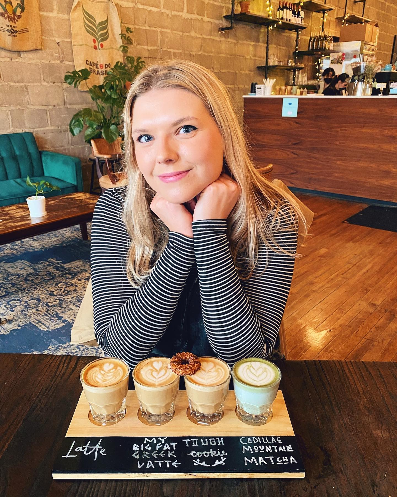

Hello! I am Abby Kathleen Randall, a graphic designer and painter based in Eau Claire, Wisconsin.
I have placed my main focus on branding, typography, and composition.
I grew up in a small town, with my mom, dad, brother, and grandparents.
Family is very important to me.
My Great-Grandmother is a talented painter who inspired me to pursue art.
Fall 2016 I started college at the University of Wisconsin-Eau Claire.
I completed my Bachelor's Degree in Graphic Communications in Spring 2020.
My first post-graduate job was as an Print Advertising Technician at Menards.
Each week, as a team we finished a weekly flyer.
I used Adobe InDesign, Illustrator, Photoshop, and Lago.
I handle stress and deadlines well, and was given the opportunity to design the most looked at pages, covers and backs.
In July 2022, I became a Promotions Graphic Designer at Menards.
As the only designer on the team, I have become a strong problem solver and creative innovator.
My tasks include creating company-wide benefit guides, posters, and vehicle sweepstake graphics.
I work closely with major racing outlets to make digital and print materials.
In addition, I archive historical company materials and am a personal Graphic Designer for the company President.
In my freetime I enjoy kayaking, crafting, pop culture, and spending time with the people I love.
I am Abby.
Resume
